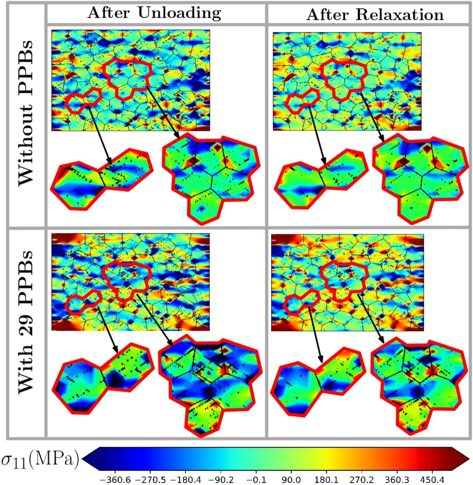
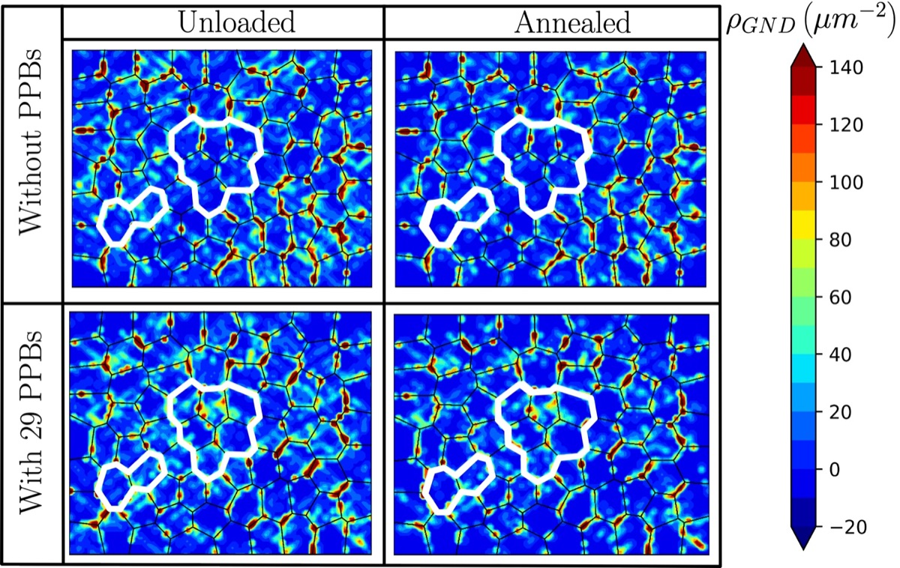

01 · Dislocation activity
Pile-ups and back stresses
Non-transmissive PPB clusters constrain dislocation motion and promote local pile-ups, changing the spatial organisation of plasticity.
Published research · ASME · 2026
How the size, number, and arrangement of PPB clusters influence dislocation motion, strain hardening, and residual stress in nickel-based superalloys.
Research question & contribution
Prior particle boundaries (PPBs) formed during powder-metallurgy processing can persist after consolidation and change the way a superalloy deforms.
I developed and applied a two-dimensional polycrystalline discrete dislocation dynamics (DDD) framework to study PPB clusters during loading, unloading, and annealing. The model represents realistic grain morphologies and tracks dislocation activity, hardening, geometrically necessary dislocation (GND) density, and residual stress.
By varying PPB cluster size, number, and spatial distribution, the study connects local dislocation blocking and back stresses with the macroscopic mechanical response.
Model scope. PPBs are represented as non-transmissive interfaces, corresponding to a limiting case of strong dislocation blocking.
Principal findings
01 · Dislocation activity
Non-transmissive PPB clusters constrain dislocation motion and promote local pile-ups, changing the spatial organisation of plasticity.
02 · Mechanical response
Larger and more densely distributed PPB clusters increase dislocation pinning and hardening within the studied configurations.
03 · Stress recovery
Regions adjacent to PPBs retain heterogeneous compressive stresses after unloading, with relaxation dependent on PPB density.
Mechanism in motion
The two simulations illustrate how PPB clusters change slip activity in a polycrystalline aggregate. Use the video controls to inspect each case.
Spatially resolved evidence

